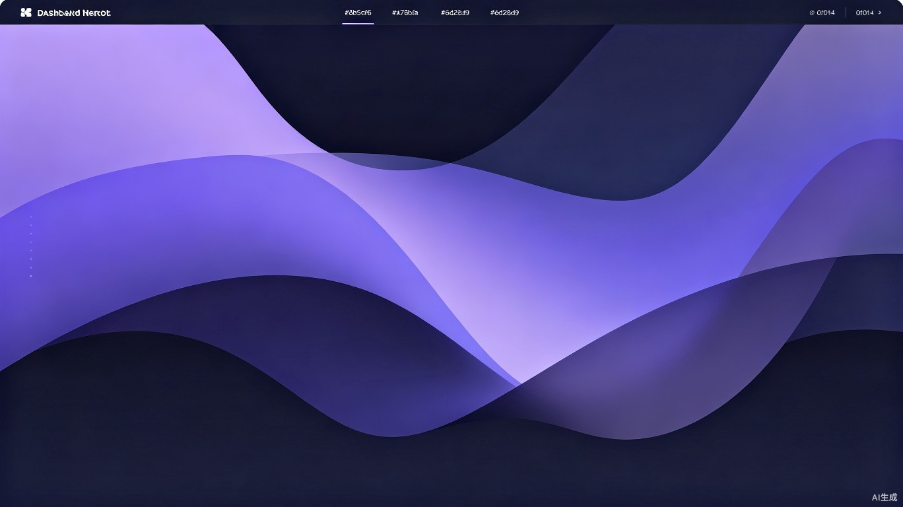

新资讯发布
AI漫剧生成迎来跨越式升级 · 2 小时前
每周精选已更新
本周 5 篇热门教程 · 昨天
AI创作行业动态与产品更新

新一代多模态模型上线，分镜一致性、角色表情与镜头语言全面提升，平均出片时间缩短 40%。
2025-06-30
同一项目内多角色立绘保持面孔、服装、配饰高度一致，无需反复调参。
从景别、机位到镜头节奏，一篇讲透漫剧分镜的底层逻辑与实操要点。
头部平台用户规模同比增长 220%，AI辅助生产成本占比已超三成。
一次性按剧本生成整集分镜，支持锁定关键镜头二次微调，效率翻倍。
从素材准备到 LoRA 微调，手把手教你训练专属风格的角色立绘模型。
东南亚与拉美市场增速最快，本地化翻译与配音成为新增长点。